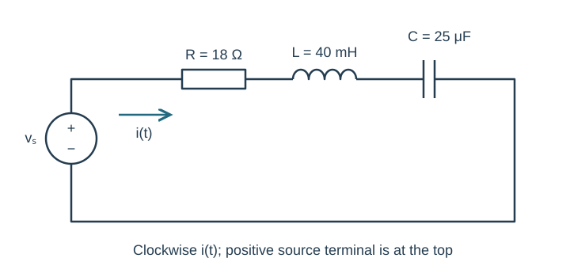
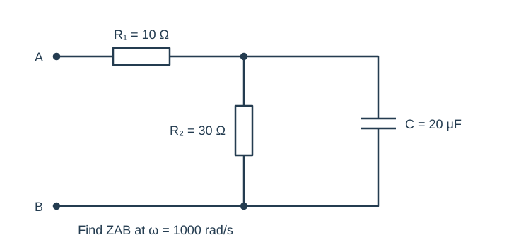
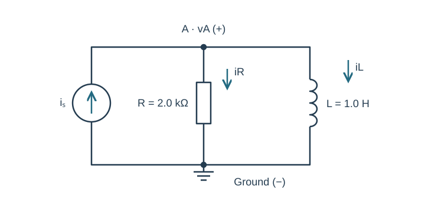
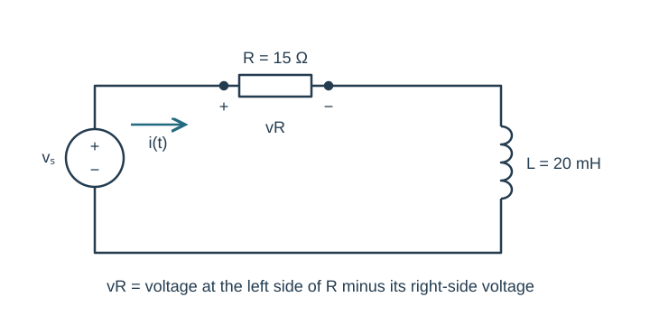
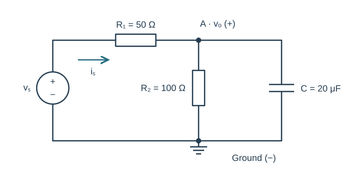

Course practice / Batch 02 / 2026-10-11 PDT
ENGR 202
正弦、相量与阻抗
Sinusoids, phasors & impedance · 第 2 组：HW 1 风格 5 题 + HW 2 风格 5 题
Zero crossings and a sine wave
Let \(v(t)=8\sin(250\pi t-\pi/4)\;\mathrm V\), with t in seconds.
- Find peak amplitude, angular frequency, ordinary frequency, and period in ms.
- Rewrite it using a positive-amplitude cosine and give its cosine-reference phase in degrees.
- Find the first upward zero crossing at or after t = 0, and the first positive maximum.
- Plot two periods beginning at t = 0 with time in ms; label both events.
中文提示（不含解答）
向上过零需要同时满足电压为零和斜率为正。
Negative amplitude and a time advance
Let \(x(t)=-3\cos(600t+5\pi/6)\;\mathrm A\). Use positive peak amplitudes and cosine-reference phases in (−180°, 180°].
- Write the canonical phasor X.
- For y(t) = x(t + 0.0015), determine Y and a time-domain cosine expression.
- State whether y is advanced or delayed and compute the phase change in radians and degrees.
- Check your original and rewritten x(t) at t = 0.
中文提示（不含解答）
先把负幅值吸收到相位中，再处理时间平移。
Conjugates and phasor arithmetic
Let \(z_1=-6-8j\) and \(z_2=4\angle(-30^\circ)\). For each item, state rectangular and polar form, with principal phase in (−180°, 180°].
- \(z_1\) and its complex conjugate \(\overline{z_1}\)
- \(z_1\overline{z_1}\)
- \(3z_2-z_1\)
- \(z_1/z_2\)
Use quadrant-aware angle calculation. Keep at least four significant digits internally, and round only final reported values.
中文提示（不含解答）
共轭改变虚部符号；复数相除可用极坐标交叉核验。
Two quadrature components
Combine \(v(t)=5\cos(800t+\pi/2)+12\cos(800t)\;\mathrm V\) into one positive-amplitude cosine.
- Show both phasors and their rectangular sum.
- Find the magnitude and principal phase, then write the single time-domain cosine.
- Verify both representations at t = 0 and t = π/1600 s.
- Draw the two component vectors and their resultant on equal-scale real/imaginary voltage axes.
中文提示（不含解答）
相差 90° 的两个相量可以用几何结果校对复数运算。
Recover a missing sinusoid
Two voltages have angular frequency \(\omega=1200\;\mathrm{rad/s}\). Their sum is \(v_T(t)=9\cos(1200t)\;\mathrm V\), and one component is \(v_2(t)=4\cos(1200t+\pi/2)\;\mathrm V\).
- Find the missing component v1(t), given v1 + v2 = vT.
- Give V1 in rectangular and polar form and draw V1, V2, and VT as a tip-to-tail sum.
- Check v1(0) + v2(0), then calculate the maximum magnitude of v1(t). Explain why that amplitude may exceed the amplitude of the sum.
中文提示（不含解答）
不能直接把两个正弦的幅值相减；先做复平面向量减法。
A capacitive series RLC circuit
The circuit has \(v_s(t)=24\cos(500t-\pi/9)\;\mathrm V\), R = 18 Ω, L = 40 mH, and C = 25 μF. Define i(t) clockwise, leaving the positive source terminal.
- Redraw the source and components in the phasor domain.
- Calculate total impedance and current phasor in rectangular and polar form.
- Write steady-state i(t), and state whether current leads or lags the source.
- Calculate all component voltage phasors and verify KVL. If simulating, convert the cosine to the simulator’s sine-source convention and compare at two phases after transients settle.

中文提示（不含解答）
容性总阻抗的虚部为负；不要由元件名称直接猜总相位。
A series resistor with a parallel RC load
Find the input impedance between A and B at \(\omega=1000\;\mathrm{rad/s}\). A 10 Ω resistor R₁ is in series with a parallel combination of R₂ = 30 Ω and C = 20 μF, as shown.
- Find ZC, then reduce the parallel pair before adding R₁.
- Give the input impedance in rectangular and polar form.
- State whether the network is net capacitive or inductive at this frequency.
- Check your parallel impedance by adding branch admittances independently.

中文提示（不含解答）
R₁ 不在并联支路内；等效并联的两端要对应同一对节点。
A current source and inductive branches
An ideal source \(i_s(t)=0.008\cos(1000t+2\pi/9)\;\mathrm A\) injects current from ground into node A. R = 2.0 kΩ and L = 1.0 H each connect from A to ground. Define vA positive at A, with resistor and inductor currents directed downward.
- Draw the phasor-domain circuit and write KCL at A.
- Find VA in rectangular and polar form and write vA(t).
- Find both branch-current phasors and verify their sum equals Is. Keep units consistent between amperes and milliamperes.

中文提示（不含解答）
电感导纳为 1/(jωL)，不是 jωL；留意其虚部符号。
Measure across the resistor
A source \(v_s(t)=10\cos(1000t-\pi/12)\;\mathrm V\) drives a series R = 15 Ω and L = 20 mH. Define clockwise current i(t). The output vR is measured across R, with positive reference on the source side and negative reference on the inductor side, as drawn.
- Find the total impedance, current phasor, and resistor-voltage phasor.
- Write vR(t) and state its phase difference relative to the source.
- Find the inductor-voltage phasor and verify VR + VL = Vs. Explain why replacing the divider numerator with ZL would answer a different question.

中文提示（不含解答）
输出是电阻两端的差分电压，不能把上方任意节点对地电压当作 vR。
Loaded output and two-point verification
The source is \(v_s(t)=10\cos(500t+\pi/4)\;\mathrm V\). It feeds R₁ = 50 Ω in series. At node A, R₂ = 100 Ω and C = 20 μF connect in parallel to ground. Define vo = vA relative to ground and source current through R₁ toward A.
- Reduce the load, then find input impedance and source current phasor.
- Find Vo in rectangular and polar form and write vo(t).
- Compute resistor and capacitor branch currents and verify node KCL.
- Predict vo at t = 0 and t = π/1000 s. For optional transient simulation, compare at matching phases in a late cycle after startup has settled, rather than comparing t = 0 startup to a steady-state formula.

中文提示（不含解答）
负载阻抗必须包括 R₂ 与 C；时域校验的时间单位为秒。